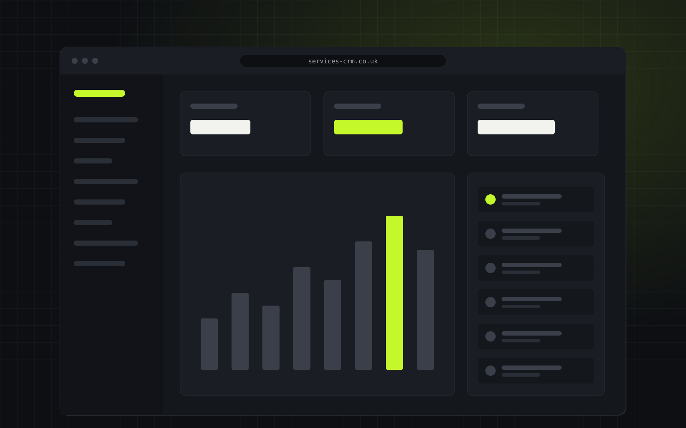

Services CRM
A multi-tenant business application that takes services businesses from first enquiry to paid invoice.
Problem solved Enquiries, quotes, scheduling, invoicing and payments in one place. Stripe subscription billing and Postmark email are integrated through webhooks and automated workflows that generate branded PDF quotes and invoices and send scheduled payment reminders. A PostgreSQL database with per-tenant isolation, authentication hardened against credential stuffing, and three automated test suites.